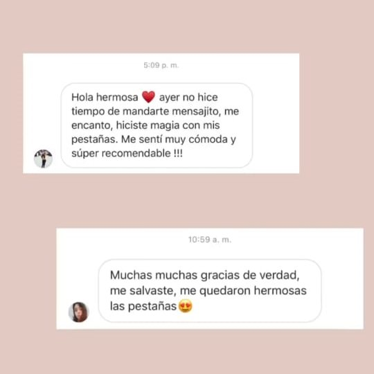
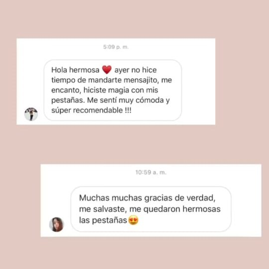

El Lifting de Pestañas es un tratamiento para las pestañas naturales, que en vez de rizarlas lo que hace es estirarlas de forma natural creando un efecto de mayor longitud y espesor. Tras el lifting, las pestañas naturales parecerán visiblemente más densas sin necesidad de la aplicación de extensiones de pestañas. El efecto lifting dura, según la calidad de las pestañas naturales, de 5-8 semanas y se puede repetir en cualquier momento, porque este tratamiento es muy suave y no daña las pestañas naturales.
Las cejas son el marco de la mirada! La forma y el diseño de las mismas debe estar relacionado con las facciones y la cantidad de cejas que tenga. El diseño y perfilado de Cejas es un servicio personalizado de depilación que consiste en darle la forma correcta a las cejas respetando la forma natural de la misma. Se tienen en cuenta diferentes factores: forma natural de las cejas, tipo y cantidad de pelo, forma de ojos y de rostro.

Es un tratamiento que modifica la forma de tus pestañas naturales y a su vez las hidrata y nutre profundamente. Este efecto de pestañas increíbles, permanecerá el tiempo que tarden tus pestañas en renovarse. Naturalmente la pestaña crece y se cae, dando lugar a una nueva pestaña. Esto puede variar en cada persona de 4,6 y 8 semanas.
El tinte de pestañas es una técnica profesional que se aplica sobre las pestañas para potenciar el color, dando una imagen de pestañas maquilladas en todo momento. ... Con este tratamiento, además de potenciar el color natural, es posible conseguir un color diferente que destaque el brillo de los ojos.


La henna para cejas es un tratamiento que consiste en darle un sombreado a la piel, ayuda a que la ceja se vea con más volumen y un poco más oscura. Es perfecta para rellenar algunos faltantes de pelo y definir mejor la ceja. La henna tiene una duración de 10 días aproximadamente en la piel, se va aclarando al pasar los días hasta que desaparece por completo.
El alisado de cejas consiste en peinar y definir la forma deseada, para luego aplicar un producto que alisará cada uno de tus vellos y los fijará de esta manera durante un mes aproximadamente.El alisado de cejas es un tratamiento especialmente indicado para cejas onduladas y/o rebeldes. Consiste en la aplicación de producto específico en esta zona para alisarlas y peinarlas de forma permanente.
El Lifting de Pestañas es un tratamiento para
las pestañas naturales, que en vez de rizarlas lo
que hace es estirarlas de forma natural creando
un efecto de mayor longitud y espesor.
Tras el lifting, las pestañas naturales parecerán
visiblemente más densas sin necesidad de
la aplicación de extensiones de pestañas.
El diseño y perfilado de Cejas es un servicio
personalizado de depilación que consiste en
darle la forma correcta a las cejas respetando
la forma natural de la misma. Se tienen en
cuenta diferentes factores: forma natural
de las cejas, tipo y cantidad de pelo,
forma de ojos y de rostro.
Es un tratamiento que modifica la forma
de tus pestañas naturales y a su vez las
hidrata y nutre profundamente.
Este efecto de pestañas increíbles, permanecerá
el tiempo que tarden tus pestañas en renovarse.
Naturalmente la pestaña crece y se cae,
dando lugar a una nueva pestaña.
Esto puede variar en cada persona
de 4,6 y 8 semanas.
El tinte de pestañas es una técnica profesional
que se aplica sobre las pestañas para
potenciar el color, dando una imagen de
pestañas maquilladas en todo momento.
Con este tratamiento, además de potenciar
el color natural, es posible conseguir un color
diferente que destaque el brillo de los ojos.
La henna para cejas es un tratamiento que
consiste en darle un sombreado a la piel,
ayuda a que la ceja se vea con más volumen
y un poco más oscura. Es perfecta para
rellenar algunos faltantes de pelo y definir
mejor la ceja.
El alisado de cejas consiste en peinar y
definir la forma deseada, para luego aplicar
un producto que alisará cada uno de tus vellos
y los fijará de esta manera durante un mes
aproximadamente. El alisado de cejas es un
tratamiento especialmente indicado para cejas
onduladas y/o rebeldes